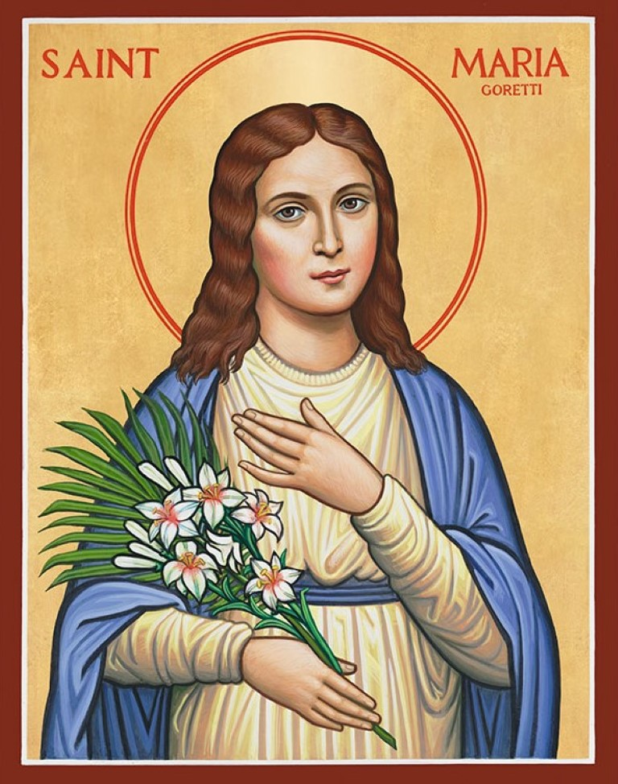

ST.MARIA GORETTI
(Brief extract from the Life of St.Maria Goretti)

Maria was a great support to her mother, she never complained about all the work she had to do and often said, “Jesus will provide for us”. Maria was growing up and her longing to receive Jesus through Holy Communion continued to increase. “I long for Jesus” she said. She could neither read nor write. However, helped by the priest and a lady in the village she was able to pass her exams. On the feast of Corpus Christi, she did receive her First Holy Communion.
A wall of love for God surrounded her like a wall. She was a very pious child, but she was definitely not naïve. Alexander constantly pestered Maria with horrid, sinful demands. She instinctively abhors sin, evil and weakness. The virtue in which Maria especially shone was purity; she looked like a lily descended from heaven. She prayed: “Take me JESUS, I offer myself to You”.
The boy is hurt in his pride by Maria’s responses and he made it very clear what he wanted from her. Maria is distressed and shouted, “No, never, that is a sin! God forbids that and we would go to hell”. The next day, Friday July 5, 1902, when there was no one in the house Alexander grabbed her roughly by the wrist and shouted: ‘Don’t stop me or I will kill you’. Maria screamed for help and fought like a tigress. Alexander couldn’t control himself any longer and stabbed her with a knife, time and time again.
In all he stabbed her 14 times, one missing her heart by mere millimeters. Maria collapsed in a sea of blood and called: “Mother, I’m dying, Mother!”
After a while, Maria managed to drag herself to the door and weakly called for help. She then lost consciousness and was taken to the hospital and they operated on her for 2 hrs without an anesthetic. She suffered terribly.
She prayed: “Jesus you have suffered so much for me, please help me in my suffering for you”. On the next day, Maria received Holy Communion. Later she said, “I forgive my murderer out of my love for Jesus. Alexander will join me in Heaven, as I have forgiven him and I pray that God will too. Soon I will meet HIM face to face!”.
She dies while kissing the Cross. After many years, Maria appeared to Alexander in a dream and offered him a lily. That moment his transformation begins. Later, when the Bishop visited him, he muttered, “She has forgiven me?” and burst into tears.
Read MoreST.MARGARET MARY ALACOQUE
(From the Diary of St.Margaret Mary Alacoque)

"I was praying before the Blessed Sacrament, when I felt myself wholly penetrated with that Divine Presence, but to such a degree that I lost all thought of myself and of the place where I was, and abandoned myself to this Divine Spirit, yielding up my heart to the power of His Love. He made me repose for a long time upon His Sacred Breast, where He disclosed to me the marvels of His Love and the inexplicable secrets of His Sacred Heart… He opened to me His Divine Heart in a manner so real and sensible as to be beyond all doubt, by reason of the effects which this favor produced in me, fearful, as I always am, of deceiving myself in anything that I say of what passes in time. It seems to me that this is what took place: JESUS: "My Divine Heart is so inflamed with love for men, and for you in particular that, being unable any longer to contain within Itself the flames of Its burning Charity, It must needs spread them abroad by your means, and manifest Itself to them (mankind) in order to enrich them with the precious graces of sanctification and salvation necessary to withdraw them from the abyss of perdition. I have chosen you as an abyss of unworthiness and ignorance for the accomplishment of this great design, in order that everything may be done by Me."
JESUS: “My well-beloved, I give you a precious token of My love, having enclosed within your side a little spark of its glowing flames, that it may serve you for a heart and consume you to the last moment of your life; its ardor will never be exhausted, and you will be able to find some slight relief only by bleeding. Even this remedy I shall so mark with My Cross, that it will bring you more humiliation and suffering than alleviation. Therefore, I will that you ask for it with simplicity, both that you may practice what is ordered you and also to give you the consolation of shedding your blood on the cross of humiliations. As a proof that the great favor I have done to you is not imagination, and that it is the foundation of all those which I intend further to confer upon you, although I have closed the wound in your side, the pain will always remain. If before, you have taken only the name of My slave, I now give you that of the beloved disciple of My Sacred Heart."
St.Margaret: "After such a signal favor which lasted for a long time, during which I knew not whether I was in heaven or on earth, I remained for several days, as it were, on fire and inebriated (with divine love) and so completely out of myself, that I had to do myself violence in order to utter a single word. The effort I had to make in order to join in recreation or to take food was so great that it was all I could do to overcome myself, which was a cause of considerable humiliation to me. I was not able to sleep, because of the pain of the wound, which is so precious to me; it produces such heat within me that it burns and consumes me alive. I also felt such a plentitude of God, that I could not explain myself to my Superioress, as I should have wished, regardless of any suffering and confusion which the recital of these favors might cause me. I would rather have accused myself of my sins before the whole world than speak of these graces on account of my extreme unworthiness.”
Read MoreST.TERESA OF CALCUTTA

Our works of love are nothing but works of peace.
Let us do them with greater love and efficiency, each one in her own or his own work in daily life; in your home, in your neighborhood, it is always the same Christ who says:
I was hungry: not only for food but for peace that comes from a pure heart.
I was thirsty: not for water but for peace that satiates the passionate thirst of passion for war.
I was naked: not for clothes, but for that beautiful dignity of men and women in their bodies.
I was homeless: not for a shelter made of bricks but for a heart that understands, that covers, that loves.
For love to be true, it has to hurt. God loved the world so much that He gave His Son. His Son loved the world so much that He gave His Life.
And Jesus says: “As the Father has loved me (by giving me to the world), I have loved you (by giving my life for you). Love as I have loved you (by giving yourself).” This giving is prayer, the sacrifice of chastity, poverty, obedience, and whole-hearted free service.
We have to love until it hurts. It is not enough to say, ‘I love you’. We must put that love into a living action. And how do we do that? Give until it hurts. Some time ago, in our children’s home, we didn’t have sugar for our children. A little boy, four years old, heard ‘Mother Teresa has no sugar for the children’. He went home and told his parents, ‘I will not eat sugar for three days. I will give my sugar to Mother Teresa’. After three days the parents brought him to our house. He was so small that he could scarcely pronounce even my name, and yet he taught me how to love with great love. It was not how much he gave, but that he gave with great love, and he gave until it hurt.
Read MoreST.FRANCIS DE SALES

A word is accepted or rejected for three reasons: because of the person who speaks it, because of the word that is spoken, because of those who hear it. For this word to be honored and accepted, the one who is speaking it must be a good man, a virtuous man, and one worthy of being believed. Otherwise, rather than being accepted, it will be rejected, despised. Further, what is said must be good and true? Finally, those who hear it must be good, prepared to receive it; if not, it will be neither accepted, honored, nor kept.
All are sinners, but not all are to be silent and refrain from teaching God’s Word, but only those who live a life wholly contrary to this divine word. Yet even if this word is preached to us by evildoers, we ought not reject it but accept it, doing as the bees do who gather honey from almost all the flowers of the fields. Even though some of the flowers are harmful and poisonous, they skillfully draw out honey, a celestial dew untainted by poison…
We must know how we are to hear and accept God’s Word….To dispose ourselves to understand it well we ought to open our hearts in the presence of divine of the divine majesty, receptive to this heavenly dew, just as Gideon spread his fleece in the meadow so that it might be watered by the rain and dew from heaven (Cf.Jgs.6:37-38).
With our hearts thus opened before God, and with the good disposition to profit from what he will say to us, let us remain attentive. Remember, it is His majesty who speaks to us and makes known His will. Thus, with a spirit of devotion and attention, let us hear the truths which the preacher proposes to us.
Read MoreST.JOHN OF THE CROSS
Priest & Doctor of Mystical Theology

John was born into poverty and want. His father died when he was one, and his mother was forced to put him into an orphanage so that he would be educated. After a series of unsuccessful apprenticeships, John found his place working in a hospital for those suffering from venereal diseases. The head of the hospital, impressed by his intelligence and warmth, offered to educate John so that he could become the hospital’s chaplain. Halfway through his studies, John went to the contemplative Carmelites.
Shortly after Ordination, John met Teresa of Avila, who was on fire with reform. He helped her found the Discalced Carmelite branch for men. Four years later, John was abducted by his Carmelite brothers who were determined to stop the reform. They placed John in a dark cell, where he suffered hunger, solitude, vermin and regular floggings for eight and a half months. In the midst of his sufferings he was visited with heavenly consolations, and some of his exquisite poetry dates from that period. At last John escaped and arrived, half-dead, at the door of the nearby Discalced Carmelite convent. The nuns took him in and nursed him. He began to recite the poems he had written in his prison and committed to memory. These became the basis of his Dark Night of the Soul. Later, he composed The Ascent of Mount Carmel, The Spiritual Canticle, and O Flame of Living Love. John advocated detachment from all things. “God does not fit in an occupied heart,” he said.
Prayer: Father in heaven, through the intercession of St. John of the Cross, grant me the strength to let go of everything that stands between me & YOU.
Read MoreST.JOHN VIANNEY
The Curé of Ars [Patron of priests]

A lukewarm soul is not yet quite dead in the eyes of the Lord, because faith, hope and charity, which are its spiritual life, are not entirely extinguished in it. it is a faith without zeal, hope without firmness, love without ardor.
Let me describe to you a zealous Christian, i.e., a Christian who really and ardently longs to save his soul, and then a person who leads a lukewarm life in the service of God. Then we will compare the two, and you will see to which class you belong.
A good Christian is not satisfied simply to believe in the truths of our holy religion. He loves them, he ponders over them, he tries in every possible way to acquire a knowledge of them; he loves to hear the Word of God, and the more he hears it, the more he longs for it. He believes not only that God sees him in all his actions, and judges them all at the hour of death, but he trembles at the thought that he will have to render an account of his whole life to God. He not only thinks of this, and trembles over it, but he strives earnestly to improve himself daily. He never ceases in his endeavors to find new ways in which to do penance.
How different from this is the Christian who lives a lukewarm life! He still believes in all the truths which the Church believes and teaches, but his faith is so weak that his heart has no part in it at all. He does not doubt that the good Lord sees him, and that he is ever in his holy presence. But while believing this, he does not amend, nor sin the less. He falls into sin as easily as if he did not believe in anything…
The hope of a good Christian is firm; his trust in God is unshaken. He never loses sight of the next life. The remembrance of the sufferings of Jesus Christ is ever present to his mind, is always in his heart… He raises his thoughts to heaven, to arouse his love of God, and that he may be sensible of the happiness of those who prefer God above all things. He represents to himself how great the reward is of those who forsake all things to do the holy will of God. Then he longs for God alone, and desires him only.
Read More